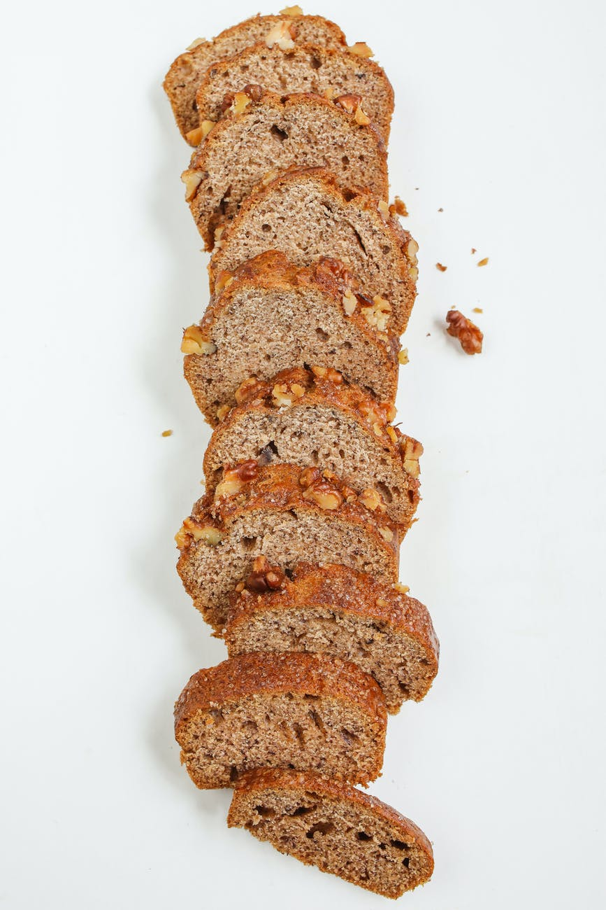

Shelley's Banana Bread
Nutrition Facts
Per Serving: 229 calories; protein 3.8g; carbohydrates 34.8g; fat 8.8g; cholesterol 51.3mg; sodium 222.9mg
Ingredients (12 Servings)
- 2 cups all-purpose flour
- 1 teaspoon baking soda
- 1/4 teaspoon salt
- 1/2 cup butter
- 3/4 cup brown sugar
- 2 eggs, beaten
- 2 1/3 cups mashed overripe bananas
Steps:
-
Preheat oven to 350 degrees F (175 degrees C). Lightly grease a 9x5 inch loaf pan.
-
In a large bowl, combine flour, baking soda and salt. In a separate bowl, cream together butter and brown sugar. Stir in eggs and mashed bananas until well blended. Stir banana mixture into flour mixture; stir just to moisten. Pour batter into prepared loaf pan.
-
Bake in preheated oven for 60 to 65 minutes, until a toothpick inserted into center of the loaf comes out clean. Let bread cool in pan for 10 minutes, then turn out onto a wire rack.